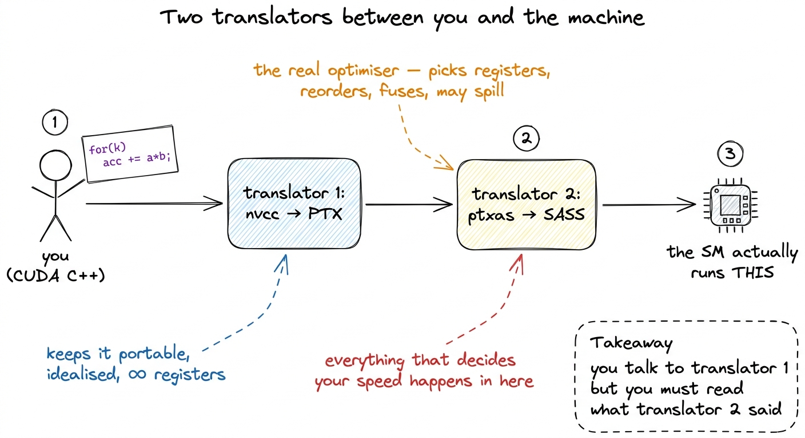
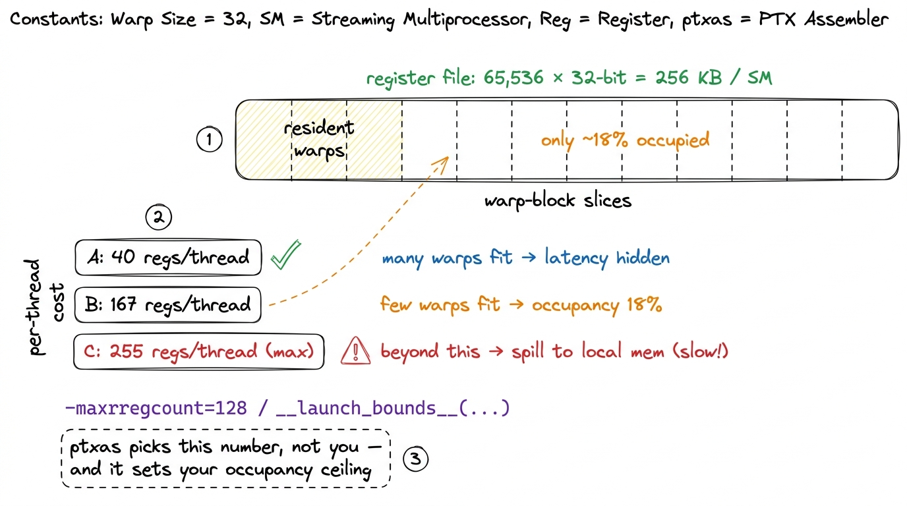
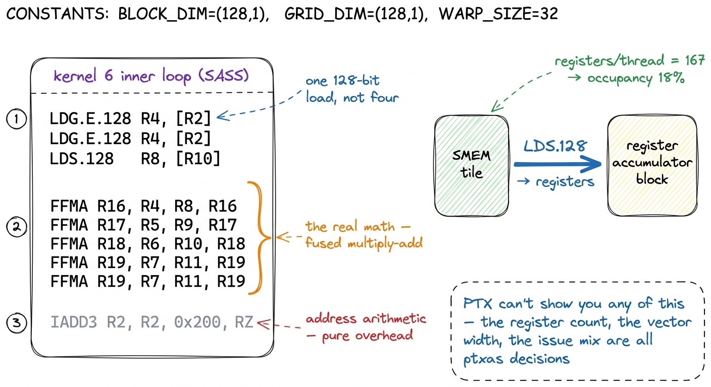

PTX vs SASS: the compilation story PTX
The first time I profiled a kernel and the numbers did not match my mental model, I learned an uncomfortable truth: the code I wrote is not the code that runs. Between the for loop I typed and the electrons moving through a Streaming Multiprocessor (SM), there are two full compilation stages and a translation I almost never saw. If you want to reason about registers, instruction issue, and why a "vectorized" load did or did not vectorize, you have to learn what those stages produce — and, eventually, learn to read the final output directly. This article is about that pipeline: nvcc → PTX → ptxas → SASS, and why the truth lives at the bottom.
Two languages, not one
CUDA has two low-level representations, and conflating them is the single most common source of confusion when people start reading compiler output.
PTX (Parallel Thread Execution) is a virtual instruction set architecture. It is NVIDIA's stable, forward-compatible intermediate representation — think of it as a portable assembly for an idealized GPU that does not physically exist. It has infinite virtual registers, a clean typed instruction set, and it is versioned by compute capability using compute_XYz targets (e.g. compute_90). PTX is a contract: NVIDIA promises that PTX you ship today will still run on GPUs released years from now.1 This forward-compatibility is why CUDA binaries from 2016 still launch on a 2024 card — the driver can JIT the embedded PTX to whatever architecture it finds. It is the entire reason PTX exists as a separate layer rather than compiling straight to machine code.
SASS (Streaming ASSembler — the "Streaming" is the same one as in Streaming Multiprocessor) is the native instruction set. It is the real machine code the hardware decodes and executes, and it is tied to one specific SM architecture, versioned with sm_XYz targets. Hopper's tensor-core and TMA features live behind sm_90a — the trailing a marks an architecture-specific target with instructions that are not forward-portable, which is exactly the trade you make to reach wgmma and TMA.2 The a suffix means "accelerated/architecture-specific". Code built for sm_90a will not JIT forward to a future architecture the way plain compute_90 PTX will — you are opting out of portability to get Hopper-only opcodes. Blackwell's tcgen05/TMEM path is the same story one generation later, under sm_100a.
The distinction that matters for performance work: PTX is what the compiler front-end wants; SASS is what the GPU actually does. They are not the same, and the gap between them is where a lot of your performance goes to live or die.

figure rendering · The two-stage pipeline. nvcc lowers your code to portable PTX; ptxas lWho does what: nvcc and ptxas
It helps to be precise about the division of labor, because "the compiler" is really two compilers.
nvcc is the CUDA Compiler Driver — an orchestrator, not the thing that emits machine code. It splits your .cu file into host and device halves, hands the host code to your system compiler (gcc/clang), and lowers the device code to PTX. So far, no SASS exists.
ptxas is the assembler that turns PTX into SASS. Despite the humble name, this is where the heavy optimization happens: register allocation, instruction scheduling, instruction selection, and the mapping onto real hardware issue slots. This is the stage that decides you get 40 registers per thread instead of 64, that reorders your loads to hide latency, and that fuses a multiply and an add into a single FFMA. When people say "the compiler decided to spill to local memory," they mean ptxas decided.
The output of the whole chain is a fat binary — an ELF executable that conforms to the host ABI and carries PTX and/or SASS for one or more architectures inside it. nvcc gives you two knobs: --gpu-architecture (which PTX to generate) and --gpu-code (which SASS variants to bake in). A typical release build embeds SASS for the exact cards you own plus PTX as a fallback, so the binary runs fast on known hardware and still runs at all on hardware that did not exist when you shipped.
JIT vs AOT: two ways SASS gets made
There are exactly two moments SASS can be produced, and the difference has real consequences.
Ahead-of-time (AOT): ptxas runs at build time and the SASS is baked into the fat binary. This is what you want in production — no compile latency at launch, and you can inspect the exact SASS that will run. If you pass --gpu-code=sm_90 (i.e. an sm_ target), you get AOT SASS for that architecture.
Just-in-time (JIT): if the binary only carries PTX for a given architecture (say you shipped compute_90 PTX but no matching sm_ SASS, or you land on a card newer than any you compiled for), the driver invokes an embedded copy of ptxas at first launch and compiles the PTX to SASS on the spot.3 The JIT result is cached — by default on disk in the CUDA compute cache — so you pay the compile cost once per (binary, driver, GPU) combination rather than on every run. A cold cache is why the first kernel launch of a freshly-deployed binary can be mysteriously slow. This is the mechanism that lets a 2016 binary run on a 2024 GPU: the front-end never saw that GPU, but the driver's ptxas did.
The practical rule: build AOT SASS for the hardware you actually run on. JIT is a portability safety net, not a performance strategy — and it means the SASS that runs is one you never inspected at build time.
Why you read SASS, not PTX
Here is the part that separates people who tune kernels from people who merely write them. My hypothesis, the first time, was that PTX would tell me what the hardware did; it did not. When your profile disagrees with your intuition, PTX will lie to you and SASS will not — because ptxas sits between them and rewrites almost everything.
Three questions only SASS can answer:
How many registers am I actually using? Register pressure caps occupancy: the SM has a fixed register file of 65536 32-bit registers (256 KB), and a hard ceiling of 255 registers per thread. If ptxas gives each thread 167 registers, you cannot fit many warps, occupancy collapses, and latency stops being hidden.4 In the GEMM ladder, this is a live tension — the warptiling kernel that reaches 93.7% of cuBLAS deliberately trades occupancy for register-resident accumulators, running at low occupancy on purpose because arithmetic intensity, not warp count, is what saturates the tensor cores at that point. PTX has infinite virtual registers, so it tells you nothing about this. Only SASS — or ncu's "registers per thread" — has the real number.

figure rendering · The register budget. ptxas allocates each thread's registers out of aDid my vectorized load actually vectorize? You wrote float4. Did ptxas honor it? In SASS, a 128-bit global load is a single LDG.E.128 instruction, and a 128-bit shared-memory load is LDS.128. If instead you see four separate LDG.E instructions, your float4 was scalarized and you are issuing four times the instructions for the same bytes. This is not visible in your CUDA source and not reliably visible in PTX; it is a ptxas outcome you can only confirm in the SASS.
Where is the instruction issue going? A GEMM inner loop that you think is "one FMA per element" may unroll into a wall of FFMA instructions, or worse, sprout address-arithmetic (IADD3, SHF, LOP3) between every useful math instruction. The profiler's "not selected" and "stalled" issue reasons only make sense once you have the SASS listing next to them.

figure rendering · Reading SASS as evidence. The vector width, the register count, and thThe tools: cuobjdump and nvdisasm
You do not need a debugger for any of this — two command-line utilities from the CUDA Binary Utilities do the job.
cuobjdump inspects fat binaries. It lists the embedded code (cuobjdump --list-elf), dumps the PTX (cuobjdump -ptx), and — the one you will use most — disassembles the baked-in SASS (cuobjdump -sass). Point it at your compiled binary or .cubin and it prints the native instructions for each architecture the binary carries.
nvdisasm is the lower-level disassembler that operates on .cubin / ELF objects. It does everything cuobjdump -sass does and more: it can reconstruct control-flow graphs (nvdisasm -cfg), annotate register liveness, and produce output with basic-block structure — useful when you are chasing why the scheduler stalled in a specific block rather than just what the instructions are.
A concrete workflow. Suppose you want the SASS for one kernel, built for Hopper, without leaving the shell:
# compile with real SASS for Hopper (AOT), keep intermediates
nvcc -arch=sm_90a -lineinfo -o gemm gemm.cu
# disassemble the SASS that will actually run
cuobjdump -sass gemm | c++filt
# or go through the CFG for a specific problem block
nvdisasm -cfg gemm.cubin > gemm_cfg.dotIn practice most of us read SASS through Nsight Compute (ncu) or Godbolt rather than raw cuobjdump, because both put the CUDA C, the PTX, and the SASS in three linked columns and let you click a source line to see the instructions it became. But the command-line tools are the ground truth, and they are what you reach for when the kernel is buried inside a larger binary and you just need to know: did my float4 become an LDG.E.128, yes or no?
The one habit to build
Reading SASS sounds intimidating and mostly is not. You are not writing it — hand-written SASS is vanishingly rare — and you do not need to understand every opcode.5 You couldn't fully understand every opcode even if you wanted to: NVIDIA publishes an instruction reference but not the semantics of most SASS instructions, and the binary opcode encodings are undocumented. The community reverse-engineered them for a few architectures; for the newest chips you work from the mnemonics and the profiler. You need to answer three concrete questions — register count, vector width, issue mix — and each is a grep away once the listing is in front of you.
So here is the habit, and it is the same predict-then-measure loop that runs through the three regimes: before you optimize, state what you expect the SASS to look like. "This float4 load should compile to one LDG.E.128; this inner loop should be a clean run of FFMA with no spills." Then dump the SASS and check. When it matches, you understand the kernel. When it does not — when your vector load scalarized, when ptxas spilled to local memory, when there are three IADD3s for every FFMA — you have found the exact thing standing between you and the next percent of cuBLAS. Every kernel in the naive-to-93.7% GEMM ladder was tuned by exactly this move: write the smallest change, then read the SASS to see whether the machine agreed with you.